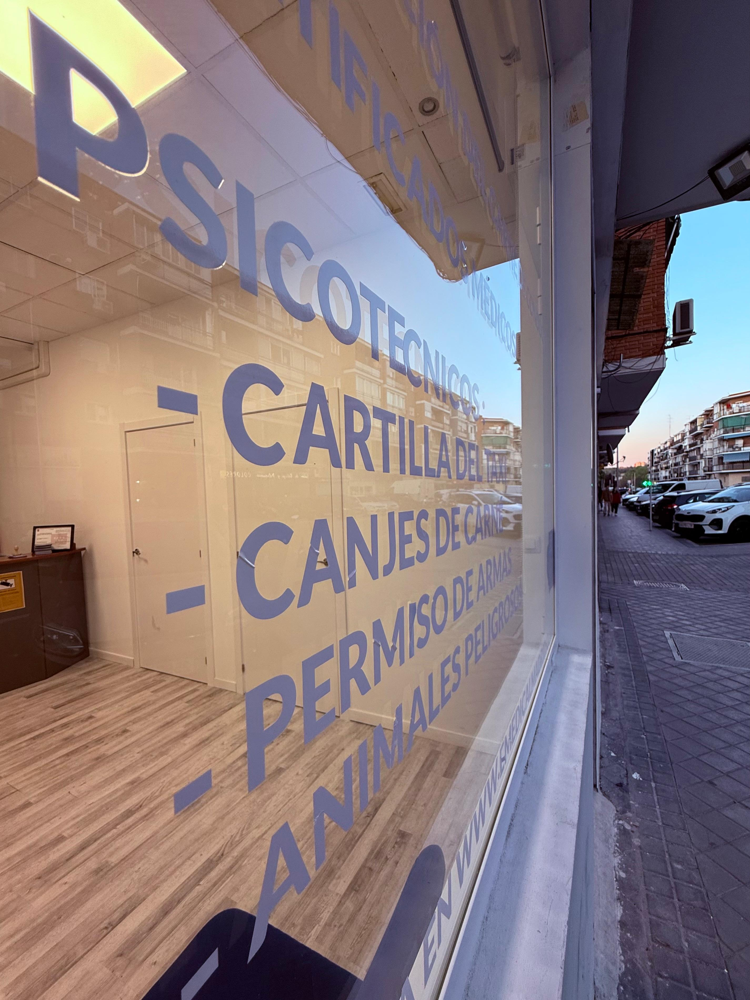

Centro de reconocimientos médicos y psicotécnicos oficiales para vigilantes de seguridad, armas, perros peligrosos y patrón de embarcación.
📞 Llámanos al 613 0000 30En Emedical Madrid realizamos tu psicotécnico oficial para vigilantes de seguridad, manejo de perros potencialmente peligrosos y embarcaciones de recreo de forma rápida y sin esperas. En una sola visita podrás completar todo el proceso: el test psicotécnico, la foto, la firma digital y la entrega inmediata del certificado médico. Todo listo para que presentes tu documentación y obtengas tu autorización en el menor tiempo posible.
En Emedical Madrid realizamos todos los reconocimientos médicos oficiales necesarios para seguridad, armas, navegación y animales peligrosos. Contamos con un equipo de profesionales acreditados y equipos de última generación.
Ofrecemos cita previa y atención sin esperas. Consulta nuestros horarios y acude cuando te venga mejor: algunos trámites pueden hacerse sin cita según la afluencia.
Tu psicotécnico en Madrid rápido, profesional y con la mejor atención. Confía en un centro autorizado con amplia experiencia en reconocimientos para seguridad privada, armas y navegación.
Aviso: Para cumplir con el RGPD (Reglamento General de Protección de Datos) y entender que tus datos están seguros, debes leer y aceptar la política de PRIVACIDAD. Esta web cumple con el RGPD, así que todo está protegido y amparado por la ley. Esta web NO USA COOKIES